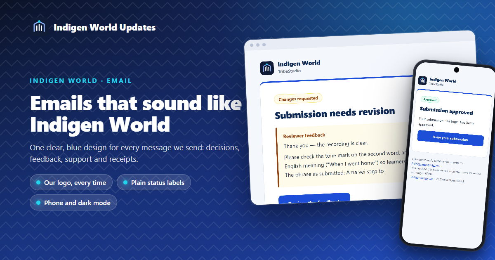
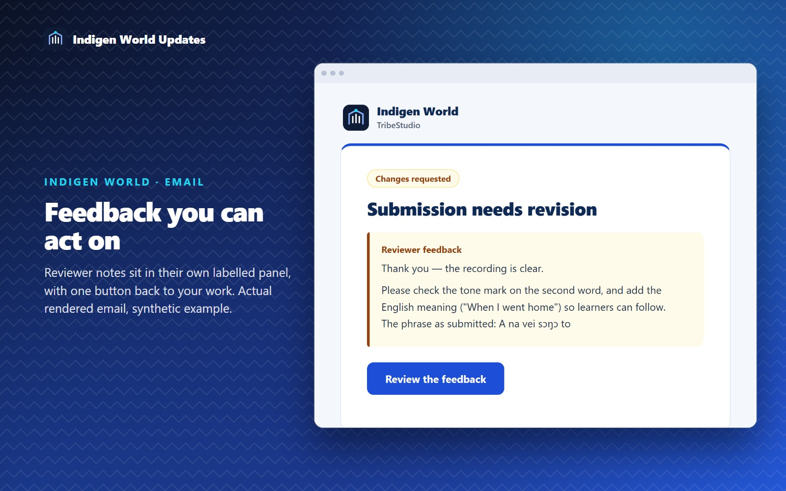
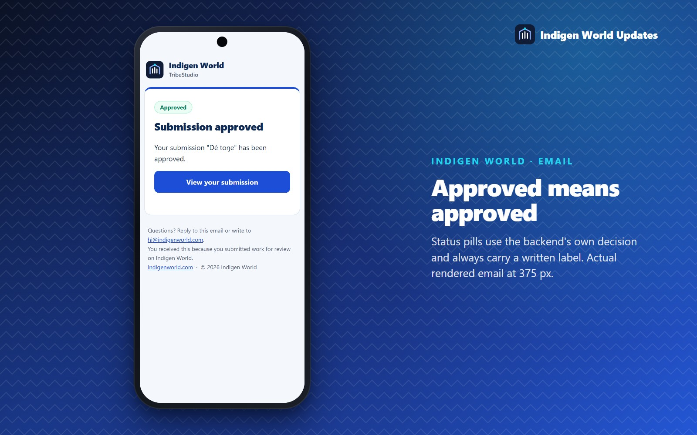
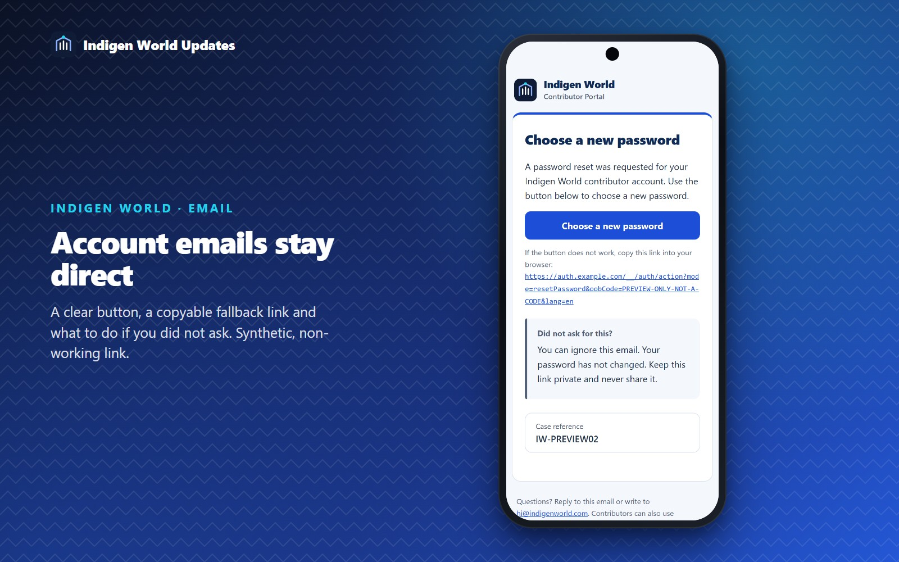
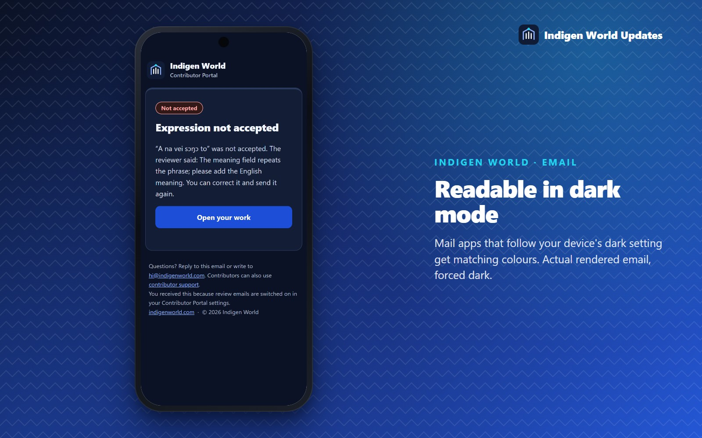

Release status: The new email design went live on 14 October 2026 for website forms, TribeStudio and Contributor Portal notifications, support emails and letters. The images show actual renders of the new emails with synthetic examples.

When Indigen World writes to you, it is usually about something you care about: a recording you submitted, an application you made, a payment you are waiting on. Those emails now share one clear, recognisable design, with our logo at the top and plain words about what happened.
Until now, our emails used an older cream-and-terracotta style that no longer matched TribeStudio or the Contributor Portal. They now share the blue design you see in the apps: a deep navy heading, one blue button, soft blue panels, and lots of white space so the message is easy to read.
Every email opens with the Indigen World logo (the roof, the three bars and the sun) beside our name. The logo travels inside the email itself, so it appears without loading anything from the internet. If your mail app hides images, you still see the name Indigen World in text. Messages about your creator work say TribeStudio under the name, and messages about invited contribution say Contributor Portal, so you know at a glance where to go next.
When a reviewer asks for changes, their notes now appear in a clearly labelled Reviewer feedback panel, keeping every line break they wrote. One button takes you back to the item so you can revise it.

Each decision email now starts with a small label: Approved, Changes requested, Not accepted, Published, Payment received and so on. The labels come from the decision our system actually recorded, and each one is written out in words, so you never have to guess from a colour.
We were careful with the wording. An approval does not claim your work is published; you get a separate Published email when it goes live. Emails that used to end with a code like “is now APPROVED” now say it in plain words.

Password emails sent by contributor support have one clear button. Below it is a link you can copy if the button does not work, and a short note on what to do if you did not ask for the reset. Replies from our support team show your case reference and link back to contributor support.

The design is a single column that fits phone screens, with 16-pixel text and full-width buttons on small screens. The emails also carry matching dark colours for mail apps that follow your device’s dark setting. Some apps, Gmail among them, apply their own dark mode instead, so the colours there can differ a little.

Nothing about when we email you has changed. You get the same emails for the same events, and your Contributor Portal email settings still apply.
If an Indigen World email looks wrong in your mail app, reply to it and tell us which app and device you use. Every email now also explains, at the bottom, why it was sent to you.